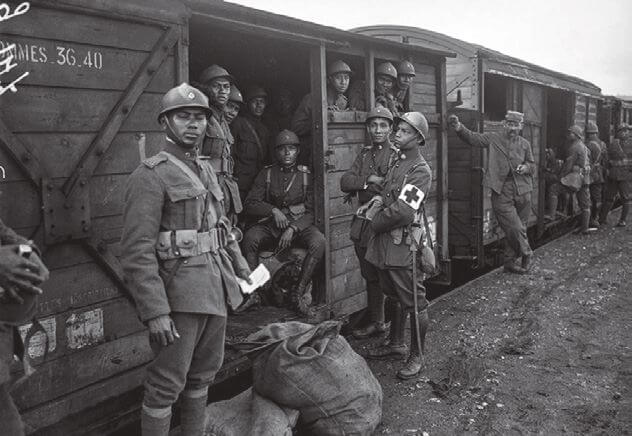

สงครามโลกครั้งที่ 1

สงครามโลกครั้งที่ 1 (World War I หรือ WWI) เป็นมหาความขัดแย้งระดับโลกที่เปลี่ยนโฉมหน้าประวัติศาสตร์มนุษยชาติไปตลอดกาล โดยการสู้รบเกิดขึ้นระหว่างวันที่ 28 กรกฎาคม พ.ศ. 2457 ถึง 11 พฤศจิกายน พ.ศ. 2461 เป็นเวลานานกว่า 4 ปี 3 เดือน มีผู้เสียชีวิตทั้งทหารและพลเรือนรวมกันมากกว่า 20 ล้านคน
สงครามโลกครั้งที่ 2
สงครามโลกครั้งที่ 2 (World War II) เป็นความขัดแย้งทางทหารในระดับโลกที่รุนแรงและนองเลือดที่สุดในประวัติศาสตร์มนุษยชาติ เกิดขึ้นระหว่างปี ค.ศ. 1939 ถึง 1945 (พ.ศ. 2482–2488) มีประเทศเข้าร่วมมากกว่า 30 ประเทศ และส่งผลให้มีผู้เสียชีวิตทั่วโลกประมาณ 70–85 ล้านคน ซึ่งส่วนใหญ่เป็นพลเรือน
สงครามเย็น
สงครามเย็น (Cold War) เป็นหนึ่งในเหตุการณ์ทางประวัติศาสตร์ที่สำคัญที่สุดในคริสต์ศตวรรษที่ 20 โดยเป็นช่วงเวลาแห่งความตึงเครียดทางการเมือง การทหาร และอุดมการณ์ระหว่างสองมหาอำนาจของโลกหลังสงครามโลกครั้งที่สอง คือ สหรัฐอเมริกา (ผู้นำกลุ่มบล็อกตะวันตก หรือฝ่ายโลกเสรี) และ สหภาพโซเวียต (ผู้นำกลุ่มบล็อกตะวันออก หรือฝ่ายคอมมิวนิสต์) ซึ่งดำเนินอยู่ระหว่างปี ค.ศ. 1947 ถึง 1991
การปฏิวัติอุตสาหกรรม
การปฏิวัติอุตสาหกรรม (Industrial Revolution) คือหนึ่งในจุดเปลี่ยนที่สำคัญที่สุดในประวัติศาสตร์มนุษยชาติ ซึ่งเป็นการเปลี่ยนผ่านวิถีชีวิตและการผลิตจาก สังคมเกษตรกรรมและหัตถกรรมที่ใช้แรงงานคนและสัตว์ ไปสู่ สังคมอุตสาหกรรมที่ขับเคลื่อนด้วยเครื่องจักร ระบบโรงงาน และเทคโนโลยี
การล่าอาณานิคมของชาวตะวันตก
การล่าอาณานิคมของชาวตะวันตก (Western Colonialism / Imperialism) คือกระบวนการทางประวัติศาสตร์ที่กินเวลายาวนานหลายร้อยปี โดยประเทศมหาอำนาจในทวีปยุโรปได้ขยายอิทธิพล อำนาจ และเข้าควบคุมดินแดนอื่น ๆ ทั่วโลก ทั้งในทวีปอเมริกา เอเชีย และแอฟริกากระบวนการนี้ไม่ได้เป็นเพียงแค่การส่งทหารไปยึดครองพื้นที่ แต่เป็นระบบที่ผสมผสานทั้ง การทหาร การทูต การค้า และการกลืนกลืนทางวัฒนธรรม
เอเชียตะวันออกเฉียงใต้
เอเชียตะวันออกเฉียงใต้ เป็นภูมิภาคจุดยุทธศาสตร์เชื่อมสองมหาสมุทร มีประชากรกว่า 680 ล้านคน แบ่งเป็นกลุ่มภาคพื้นทวีปและหมู่เกาะ ซึ่งในอดีตเป็นเบ้าหลอมอารยธรรมอินเดีย จีน และอิสลาม ก่อนจะถูกชาติตะวันตกเข้ามายึดครองเป็นอาณานิคมในศตวรรษที่ 19 โดยมีเพียง ไทย (สยาม) ที่รักษาเอกราชไว้ได้ ต่อมาหลังผ่านพ้นวิกฤตสงครามเย็นและสงครามเวียดนาม ทุกประเทศได้ร่วมมือกันผ่าน อาเซียน (ASEAN) จนปัจจุบันกลายเป็นฐานการผลิตอุตสาหกรรมไฮเทคและยานยนต์ไฟฟ้าที่เนื้อหอมที่สุดแห่งหนึ่งของโลก ทว่ายังต้องเผชิญความท้าทายจาก ข้อพิพาททะเลจีนใต้ และการคานอำนาจระหว่างสหรัฐฯ กับจีนในปัจจุบัน